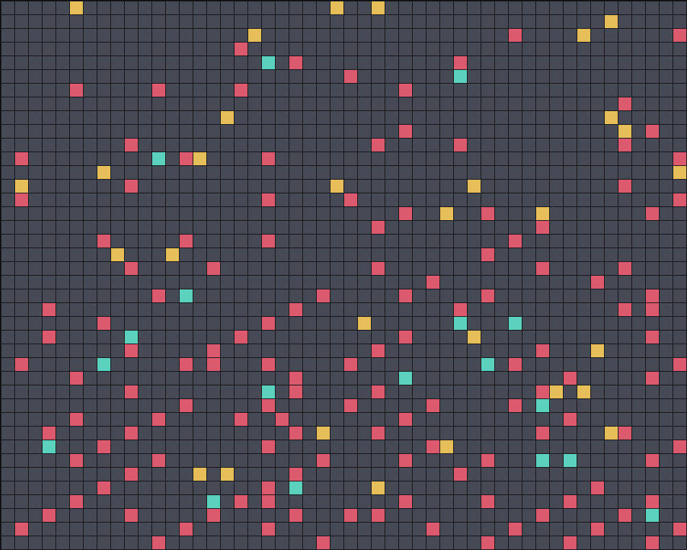

aliquot sequences
take a number. add up its proper divisors — everything that divides it, not counting the number itself. that's s(n). now do it again to the answer, and again. the aliquot sequence is the chain you get: n → s(n) → s(s(n)) → …
three fates wait at the end of a chain:
perfect numbers sit still — s(6) = 1+2+3 = 6. amicable pairs trade places forever — 220 → 284 → 220. and for a lot of numbers, the chain just dies at zero (primes fall to 1, and s(1) = 0). but some chains wander off and never come home, and nobody knows where they end.

every square is one n from 1 to 2000, coloured by where its chain ends. out of the first 2000:
the grey is the boring majority: most numbers are deficient, their divisors can't even reach them. the gold and teal dots are the rare ones that fall into a trap and stay. the red is the open frontier — those chains grow fast and pass 50,000 before they close, so this little census can't say where they go.
the famous one is 276. its aliquot sequence has been followed into the hundreds of digits and still hasn't terminated or repeated. nobody knows if it ever will. it's one of the oldest open problems you can explain to a kid with nothing but a pencil.
census computed here by sieve up to 50,000; the 139 wanderers are marked, not resolved. a chain that leaves the window is honest about it.